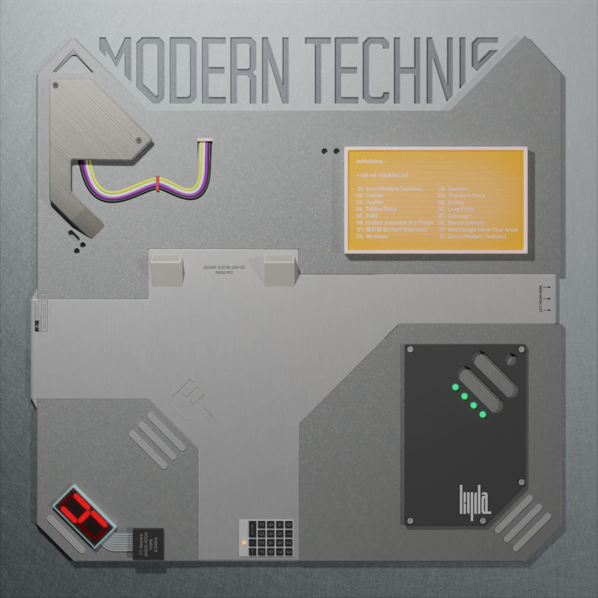

Modern Technic |
| 2021 | ||||
|  | ||||
|
Intro (Modern Technic) Jupiter 柔软钻石 (Soft Diamond) Overton Hollow Cyanogen Box of Colours And Google Owns Your Arms | ||||
Intro (Modern Technic)#01 | 3:15Modern times left me disappointed, The neon lights we were promised haven’t arrived. The future’s bleak, and worse, it is bland and annoying Our mundane dystopia, how will we survive? With the world at our backs, we’ll just Face the sun, take your time. ‘Cause when the demons come, oh we will be divine. Cyberpunks on the run, The Modern Technic of our lives, our story’s only just begun.
(Good morning, Default Username. It is now 6:45am, Wednesday 3rd of August 2022. In the news today: Elon Musk epicly owns trolls with a dank political compass meme. Reverse Bean Dad? Shocking Revelation: Peach Husband Bought The Peaches! And in other news, the cost of living crisis continues to--) | ||||
Jupiter#03 | 3:00As Jupiter rises above the horizon,
Your eyes are surprised, advertised to by drones in the sky, What’cha wanna buy? The sunset is sponsored by earbuds and games, As the heavens themselves try to sell out their fame, What a shame, they’re all the same. Something’s in the water, something can’t be seen, As the demons spread their wings, go riding free, The ninety-ninth call to action, would you like to round up your order? We’re sure that the poor would adore your compassion, And we pinky promise that it’s not our taxes. Blood and ashes, how did everything turn fascist? Think we’ve left it far too long and now our future’s all but gone, And when we’re up against the wall and there is no-one left to call, We’re reassured that when the end times come at least we won’t be bored, And when the plastic and petrol give way to the chrome and lights, The fire tunnel that we’re destined to all die in will writhe in RGB, And our last moments will make some epic content For your family to watch while they eat. (‘Cause) as Jupiter falls through the trees in the forest,
The shadows of all of our fears looked and saw what we are, We won’t get far, And the halos of angels are buzzing like signs made of neon, With lungs full of freon, we reach for the stars, From Earth to Mars. (Something’s in the water) (Something can't be seen) | ||||
柔软钻石 (Soft Diamond)#07 | 4:04那些嘴巴还在说 你的耳朵已麻木 你只想知道雨珠 窗外要流向何处 穿街过巷顺流而下 奔向海滩四百步 汇聚成潭映照灯火 车轮驶过飞雾 无尽的指责掩饰 无法压抑的厌恶 欲望砸碎的镜中 你存在是个错误 幻想离开整个地球 逃到火星去放牧 无拘无束无牵无挂 种一棵猴面包树 无情的人啊 离他越远就越好 软弱的人啊 他的赖你不需要 运气不是直接的因果 打扰世间并非你选择 所以不必道歉 耐心一点 忽然有一天 你拥有罗盘和宝剑 清晨就出发 写下属于自己的诗篇 一从篝火燃烧痛苦 吐出被灌下的毒 一片森林葱郁延绵 做个树上的神仙 过去算了吧 别再和他们计较 回忆忘了吧 咒语会立刻失效 从柳梢到草尖到荷叶 透明流动的 柔软钻石
看你万丈光芒 旋转飞舞 | ||||
Overton#08 | 6:12Come alive, come alive, come alive, There's a myriad of petty little things you gotta do to stay alive Nine to five, nine to five, nine to five, Every other waking hour making labour just in order to survive Take a right, take a right, take a right, Every day the world is turning, always churning, always getting into fights What a sight, what a sight, what a sight, As the rats they come a-racing down the tunnel at the end I see a light Oh, it’s an oncoming train, You thought you had a chance to survive there, In for a world of pain, You can’t even make a complaint, or escalate, It’s just your fate, see it’s too late, we’ll set you straight, You’re in no state, to bring the hate up to the table, Take every day as it goes, Ask no questions, get no lies, don’t even try. Gonna die, gonna die, gonna die, As the Earth is slowly choking they’re polluting all the oceans and the skies Big surprise, big surprise, big surprise, They’ll be dead before they see the full effects of what we told them was unwise Tell a lie, tell a lie, tell a lie, Tell us anything to keep us in our beds and stop the ultraviolet light It’s the time, it’s the time, it’s the time, Should have started long ago but failing that we’ll meet today and set it right Oh, it’s the gathering storm, You thought you had a chance to escape there, Oh, you can have your reform, I say good luck, you’ll get nowhere, a vacant stare, Are you aware, it won’t be fair, see they’ve prepared, Billionaires, see they will tear you to shreds there, Take all the fires to them, Asking nicely, look how little they will care. The statistics will tell you you’re still alive, But there’s only so much that can ever mean. After all, this is the Year of our Lord twenty- I’ve lost count. They move all the same to me. Slowly suffocating; they’ve closed the Window .
I’ll die from poison A, or I’ll die from poison B. Behind the wall they built with hearts and souls of stone, Our job will not be finished till they end up just as cold. The world's on fire. Who lit the match, set it burning? Who added fuel, kept it turning? The world’s on fire. Who brought the kindling to the flame, But then refuses to take the blame? The world’s on fire. Who toasts marshmallows on the ashes of our souls? And stands united when resistance starts to grow? We’re told there’s good ones, and then they stick up for the bad, Then tell the papers how our mean words made them sad! The world’s on fire. The world’s on fire. So: take the fire back to them. They’ll be burning ‘till the end. Tear their castles down to stone. Want to stop the violence? Start with your own Say non-lethal, that’s a lie, They put a bullet between her eyes. See the whistle, see the bells. See we’re living in living hell. | ||||
Hollow#11 | 3:41We can meet at night in the hollow ,
Where we won’t be seen. Chasing shots from Apollo, To the light of Selene. We can meet at night in the hollow ,
See things you won’t believe. Under fire, look to tomorrow, We’ll take this reprieve. And these days it’s forbidden, ‘Cause they’re warped by hate. But if we stay hidden, And cooperate, ‘Cause right here, down in the hollow ,
We can help ourselves. Making what they won’t give us, Take and recuperate. It’s not too late. It’s never too late. If they won’t help us, then we’ll help ourselves. DIY, we start to fly, and then we’ll know we’ll be alright. And we’ve moved on from horses, gone are all the Days messing around, because we’ve Found the secret formula and brought it to the hounds, Jack right in to cyberspace, and grab your acids, grab your base, And welcome to your new birthplace, your true self’s face When we get back from the hollow ,
And they’ll all see The things they thought they never want to see, The real you, running wild and free. | ||||
Cyanogen#13 | 5:28We’re rising up, we’ll take the low road, The only route worth taking now, And if we stop, we’re on for death row, And that is no way to go down, Don’t fuck with us! We’re burning bright like cyanogen .
We’re poisonous! D’ya wanna see all this pain again? So tell us what your fucking lobbies bought you, So we can burn it to the ground, We all know that St. Peter will condemn you, So what’s the point in waiting around? Tell me something new, tell me something other than excuses, Black and blue, what good are precedents to you? Now we’re through, and as our demons ride delivering the news, We made this guillotine bespoke and ready for you. Don’t fuck with us! We’re burning bright like cyanogen .
We’re poisonous! D’ya wanna feel this pain again? (Action / Reaction / Inaction / Reaction) (Inactive / Proactive / Inactive / Proactive) Don’t fuck with us! We’re burning bright like cyanogen .
We’re poisonous! D’ya wanna feel this pain again? Don’t fuck with us! We’re burning bright like cyanogen .
Endangered us, We’ll make you know what it means again. | ||||
Box of Colours#14 | 2:33Open up your box of colours ,
Take your pick of any shade. As another round of stories, They get written on the page. A never-ending stream of situations and events When we hear that bell, we read it well, And we never know which way they’ll go, They twist and turn in spectrums shining out to the wider world out there. You sold your soul to midnight coal, Your arms to desert sand. Your latest phone is London Stone, Your wallet’s dark pecan, In a tidal wave of swatches, And away they go. Box of Colours , gathering codes.
Land of subjects ready to pose, Pixel perfect panels in place, Clear emotions on every face. Ensemble marching out, parade, The lucky ones land on our front page, You watch the numbers rise and rise, Your story spreading far and wide, And we’ll all be back next week, And away we go. Box of Colours , gathering codes.
Land of models ready to pose, Pixel perfect panels in place, lear emotions on every face. Box of Colours , page after page,
Heroes, villains, taking the stage, Grab the lights, a new golden age, Matinee live in cyberspace. | ||||
And Google Owns Your Arms#15 | 3:02(Taking risks is living a life to the fullest) Do you think with your own mind? Or is that just another inefficiency the devs will soon refine? Living in the plastic age, where your eyes stream to twitch, and Google owns your arms ,
When the lights go out, can you still see the stars? Can they replace what’s in your brain? How much of yourself do you still have when the weekend comes again? (When the lights go out, can you still see the stars?) | ||||
| Instrumentals:
#02 Fractal #04 Taking Risks #05 3468 #06 Forbes' Insoluble Dry Plates #08 We Know #10 There's A Place #12 Lose Faith #16 Outro (Modern Technic) - 我们知道 【secret track】 | ||||